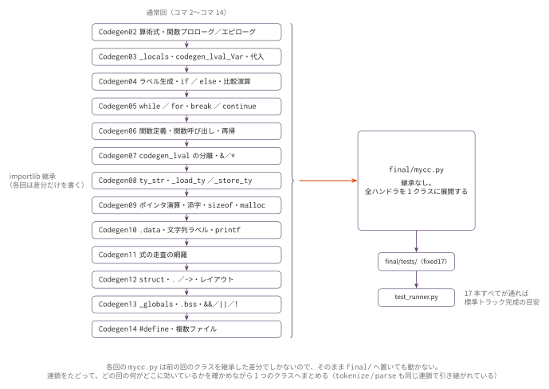

コマ15: Python 版総合演習・mycc.py 統合
今日のゴール
コマ14までに作った Python 版 C サブセットコンパイラを final/mycc.py に統合し、標準トラックの成果物として完成させる。
この回では新しい構文は追加しない。 目的は、これまでの実装を1つにまとめ、テストし、読めるコードに整えることである。
python3 scaffold/test_runner.pyこのコマンドで final/mycc.py と final/tests/ を使った最終確認を行う。
この回で行うこと
| 作業 | 内容 |
|---|---|
| 統合 | コマ14までの完成版を final/mycc.py に反映する |
| 総合テスト | final/tests/ の17本を実行する |
| バグ修正 | 落ちたテストを小さい入力に分解して直す |
| コードレビュー | 関数の責務、変数名、コメント、重複を確認する |
| 仕上げ | 動作確認方法と実装上の工夫を説明できる状態にする |
コマ1からコマ14までの到達点
ここまでで扱った主な機能は次の通りである。
| 範囲 | 機能 |
|---|---|
| 式 | 整数、四則演算・剰余、比較、論理演算子 && \|\| !（短絡しない）、三項演算子、前置 ++/--、sizeof(型名) |
| 変数 | ローカル変数、代入（= のみ）、スコープ、グローバル変数 |
| 制御 | if、while、for、break、continue |
| 関数 | 関数定義、関数呼び出し、再帰、引数、戻り値（void を含む）、可変長引数関数の呼出し |
| 型 | int、char、ポインタ（多段可）、void *、構造体 |
| メモリ | lvalue / rvalue、&、*、sizeof、malloc |
| 入出力 | 文字列リテラル、printf、fopen 系のストリーム操作、exit |
| 分割 | #include、#define、複数 .c ファイル |
これで language_spec.md の全機能を実装したことになる。
機能ごとの導入回と代表テストは language_spec.md の
「到達範囲: 機能 → 導入コマ → 検証テスト」の表で引ける。
標準トラックの範囲は仕様そのままであり、仕様にあって実装しない機能は無い。
&& / || が短絡しないのも、複合代入 += などが無いのも、
仕様がそう決めているためである（前者は仕様の例外 E3、後者は「除外機能の一覧」）。
本物の C へ寄せたい人は、発展課題 S1（短絡評価）と L2（複合代入）で扱う。
コマ15の作業は、これらが同じ mycc.py の中で同時に動くことを確認する総合演習である。
final/mycc.py への統合
通常回では sessions/NN_xxx/mycc.py を編集してきた。
最終成果物は final/mycc.py に置く。
workbook/
├── sessions/14_preprocess_multifile/mycc.py # 直前回までの作業ファイル
└── final/mycc.py # 最終成果物の統合先
通常回の mycc.py は、前の回のクラスを importlib で継承した差分だけを書いてきた。
統合はファイルのコピーではなく、この連鎖をたどって全ハンドラを 1 つのクラスへ展開する作業である。
まず、コマ14までの完成版を final/mycc.py に反映する。
その後、次のコマンドを実行する。
python3 scaffold/test_runner.py省略形の test_runner.py は、デフォルトで final/mycc.py と final/tests/ を使う。
明示的に指定する場合は次の通り。
python3 scaffold/test_runner.py --compiler final/mycc.py --tests final/testsfinal/tests の位置づけ
final/tests/ には、標準トラック到達の参考指標となる17本のテストが入っている。
| # | テスト | 主な確認内容 |
|---|---|---|
| 1 | f01_arith.c |
算術式 |
| 2 | f02_vars.c |
ローカル変数 |
| 3 | f03_if.c |
条件分岐 |
| 4 | f04_while.c |
while |
| 5 | f05_for.c |
for |
| 6 | f06_break.c |
break |
| 7 | f07_continue.c |
continue |
| 8 | f08_func.c |
関数呼び出し |
| 9 | f09_recur.c |
再帰 |
| 10 | f10_ptr.c |
ポインタ |
| 11 | f11_ptr_arith.c |
malloc + ポインタ演算 |
| 12 | f12_struct.c |
構造体 |
| 13 | f13_global.c |
グローバル変数 |
| 14 | f14_string.c |
文字列と printf |
| 15 | f15_define.c |
#define |
| 16 | f16_ternary.c |
三項演算子 |
| 17 | f17_incr.c |
前置 ++ |
この17本（fixed17）が全通することを標準トラック完成の強い目安とする。
テストが落ちたときの切り分け
総合テストで落ちた場合、いきなり大きな入力を読むのではなく、原因を小さく分ける。
- どのテストが落ちたかを見る
- そのテストが使っている機能を確認する
- 該当するセッションの小さいテストを再実行する
- 入力 C をさらに小さくする
- 生成アセンブリを見る
- 必要なら qemu / gdb で実行時の値を追う
たとえば f12_struct.c が落ちた場合、まずコマ12の dot_access.c と arrow_access.c が通るか確認する。
コマ12の小さいテストが通らないなら、構造体メンバのオフセット計算や codegen_lval() を見る。
コマ12のテストは通るが f12_struct.c だけ落ちるなら、関数引数やポインタ渡しとの組み合わせを疑う。
コードレビュー観点
動くだけでなく、読めるコンパイラにする。 仕上げとして次の点を確認する。
| 観点 | 確認すること |
|---|---|
| AST 走査 | self.codegen() メソッドと self.codegen_lval() メソッドの責務が分かれているか |
| 型 | self._type_of_expr() と self._type_of_lval() の役割が明確か |
| 変数管理 | self._locals と self._globals の探索順序が明確か |
| スタック | フレームサイズが16バイト境界に揃っているか |
| 関数呼び出し | 引数を a0 から順に渡しているか |
| データ領域 | 文字列、.data、.bss の出力順が整理されているか |
| エラー | 未定義変数や未対応ノードで分かるエラーを出しているか |
| コメント | 複雑な処理だけに短いコメントがあるか |
完成チェックリスト
python3 scaffold/test_runner.pyが通る- 生成アセンブリを1つ以上読んで、どこで何をしているか説明できる
self.codegen()、self.codegen_lval()、self._type_of_expr()、self.gen_func()の役割を説明できる- 自分が苦労したバグと、その直し方を説明できる
final/mycc.pyが最終成果物であることを確認している
このあと
成果物はここで完成する。このあとは選択制の発展課題へ進む。
発展課題の中でも C 移植・セルフホスト（P1）は、動く Python 版を参照実装として、
Python の dict を C の連結リストへ、Python のクラスを C の struct へ写す
長期チャレンジである。どれから始めるかは、発展課題の
「どこから始めるか」の表を目安にする。
次はコマ16（発表・振り返り）である。自身の取り組みを発表する回で、番号のある通常回には含めない。
編集するファイル
final/mycc.py
sessions/15_integrate_mycc/ に mycc.py は無い。
この回だけは、編集先が sessions/NN_xxx/mycc.py ではなく final/mycc.py である。
コマ14までの完成版をここに反映し、以後の修正もこのファイルに対して行う。
tests/
この回は専用のテストを持たない（sessions/15_integrate_mycc/tests/ は空である）。
使うのは final/tests/ の17本で、内訳は前の「final/tests の位置づけ」節の表の通りである。
テストごとに .ans（期待する終了コード）があり、f14_string.c には .stdout も付く。
テスト
python3 scaffold/test_runner.py省略形の test_runner.py は、デフォルトで final/mycc.py と final/tests/ を使う。
個別に動かす場合は、次のようにする。
python3 final/mycc.py final/tests/f01_arith.c \
| riscv64-linux-gnu-gcc -x assembler -static - -o out
qemu-riscv64 ./out
echo $?注意
この回では新しい構文を追加しない。
language_spec.md の全機能はコマ14までで実装済みで、仕様にあって実装しない機能は無い。
&& / || が短絡しないことも、複合代入 += が無いことも、仕様どおりの状態である。
final/mycc.py のスケルトンは、通常回と違って importlib による継承を持たない。
コマ14までの実装は前の回のクラスを継承した差分の積み重ねなので、
そのまま置いても動かない。継承の連鎖をたどって1つのファイルにまとめる必要がある。
テストが落ちたら、いきなり final/tests/ の入力を読まず、
対応するコマの小さいテストへ降りて切り分ける（「テストが落ちたときの切り分け」節）。
final/tests/ の17本は標準トラック到達の参考指標であって、
言語仕様の全機能を網羅した検査ではない。
統合した mycc.py が出す最終的なアセンブリを1命令ずつ確認したいときは、RV64 シミュレータ に貼り付ける。
この回の完成形に相当する OCaml 版参考実装が ../../workbook/ocaml/README.md にある。完成相当の実装なので、まず自分の実装方針を検討してから確認すること。